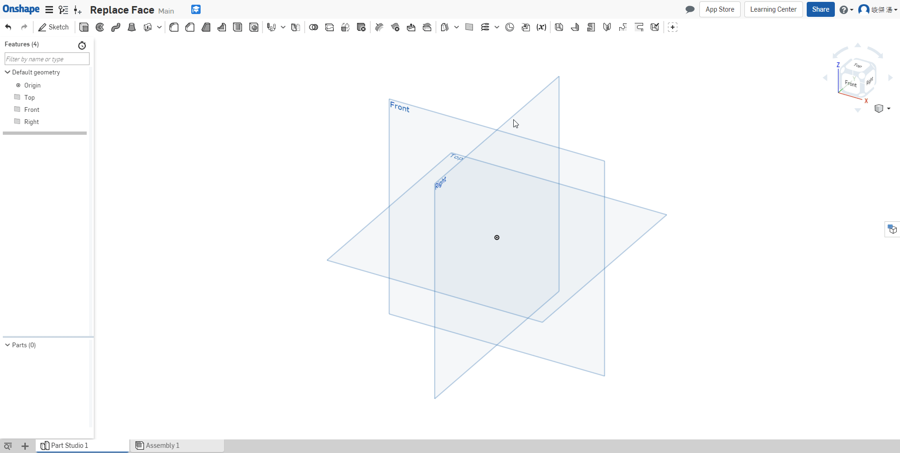
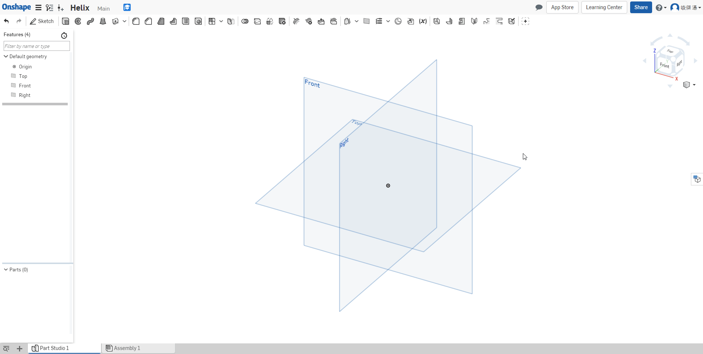

Feature
Extrude (Shift+e) 擠出

Revolve 旋轉

Sweep 掃出

Loft 疊層拉伸

Thicken 加厚

Fillet 園角

Chamfer 倒角

Draft 拔模

Rib 肋材

Shell 薄殼

Hole 鑽孔

Lin ear Pattern 線性複製排列

Circular Pattern 環狀複製排列

Curve Pattern 曲線複製排列

Mirror 鏡射

Modify Fillet 修改園角

Delete Face 刪除面

Move Face 移動面

Replace Face 取代面

Offset Surface 偏移曲面

Plane 平面

Helix 螺旋線

Constraint << Previous Next >> Drawing